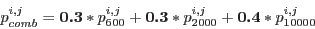

psfgen image=source.fits output=source_psf.fits energy='600 2000 10000'
The file 'source_psf.fits' contains 4 PSFs, i.e. PSF with 600eV, PSF with 2000eV, PSF with 10000eV and their linear combination (see 10). The PSFs can be viewed using command ds9 source_psf.fits[0] source_psf.fits[1] source_psf.fits[2] source_psf.fits[3].
psfgen also allows the user the give the weightings for the linear combination via parameter weight. For example,
psfgen image=source.fits output=source_psf.fits energy='600 2000 10000' weight='0.3 0.3 0.4'
will calculate the pixels in the combination PSF using
|  | (1) |